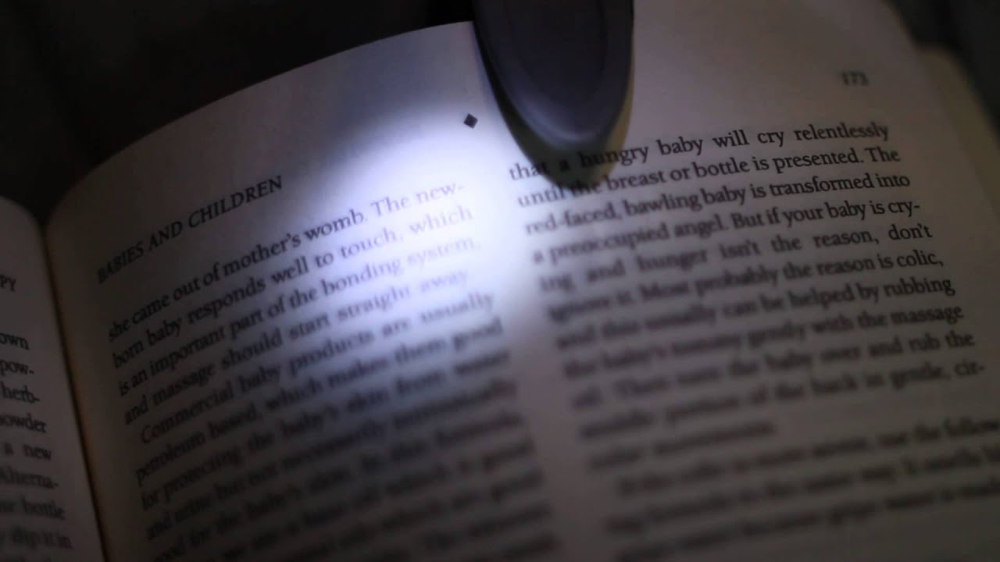
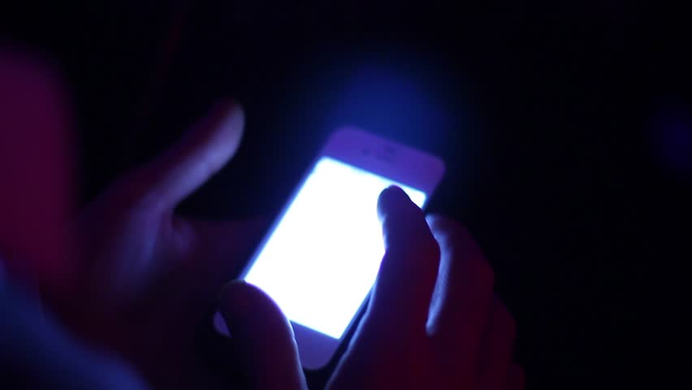
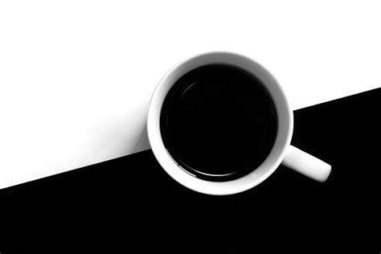
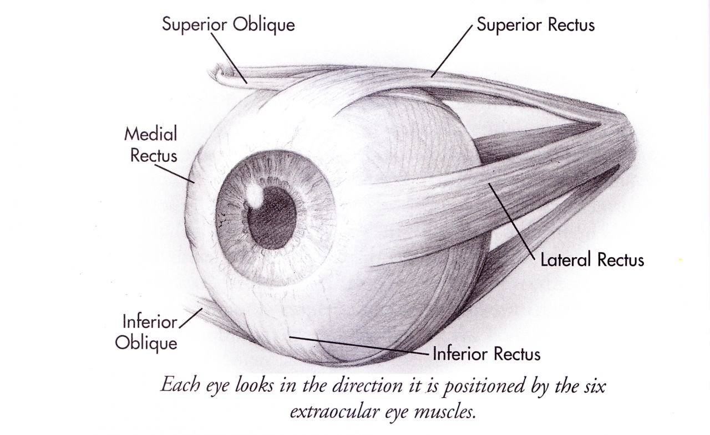

1.How does night reading affect your sight?
Reading for long hours can tire our eyes regardless of light conditions. It is not proved that reading in poor light conditions can damage our sight. However it is more comfortable for us to read in good light conditions not to struggle to see every letter. Enjoying books in dim light can only shorten the time when eye strain effect appears.
2.Why you should avoid reading from smartphones at night?
It is due to the blue light emitted by screens of smartphones, tablets and ohter devices. Artifical blue light tricks our brains into waking up and disturbs the natural body's rhythm of sleeping. It can lead to insomnia.
3.Black or white? Evertyhing about contrast
If it comes to digital displays it might seems confisuing whether it is better to read white letters on black background or vice versla. Most studies have shown that it is better to read black text on white background. When the background is white it is bright and it forces iris to close a bit more comparing to dark background. It prevents from "Halation" effect. It is also a good idea to turn the white background into light-grey so the black text is easier to read than in a white background because less light is reflected behind the text. In addition eyes will not be tired so quickly.
4.Eye's desire to be fit
 Nowadays majority of people keep or want to keep their body in shape. The same logic should also conern our eyes. There are few exercies that can help reduce the stress in the muscles that hold Your eyes. 1. Close Your eyes and put palms on eyelids. Apply light pressure on Your eyes - it will spread the tear film evenly in Your eyes and relax them. 2. Keep Your head motionless and move Your eyes from left to right and from down to top. Reapeat that five times. 3. Try to draw a figure eight with Your eyes.
5.What do your eyes are talking about?
If eye is twitching it can be indicative of stress. Moreover if Your eyes are puffy and red it might be a sign of Your tiredness. As a response to being dry out and strained Your eyes can tear up. It can be caused by too long time spent in front of a screen without proper breaks. Furthermore broken blood vessels appear as long as Your eyes are overworked.
6.Daily tips & tricks
Proper breaks are the key for healthy eyes. Keep in mind that many of us spend most of our time in front of digital screens. Muscles that surrounds eyes are strained to focus vision on the nearby object. If the thing You're looking at is always in the same distance the same muscles are strained. Imagine Your shopping routine when You have all heavy items in one bag. From time to time You have to change hand that carries the bag. The same is with the muscles supporting the eye. You need to change the objects, according to distance, you are looking at to avoid eye's muscles fatigue. It is also a good habbit to consciously do some exercises to relax Your eyes.